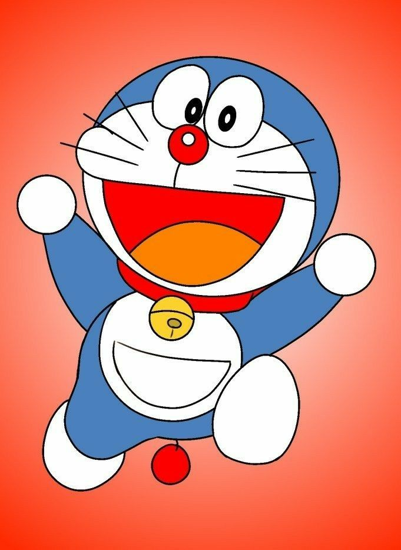

Doraemon (ドラえもん) is a Japanese manga series written and illustrated by Fujiko F. Fujio. First serialized in 1969, the manga's chapters were collected in 45 tankōbon volumes published by Shogakukan from 1974 to 1996. The story revolves around an earless robotic cat named Doraemon, who travels back from the 22nd century to help a boy named Nobita Nobi.
The manga spawned a media franchise. It was adapted into three different anime TV series in 1973, 1979, and 2005. Additionally, Shin-Ei Animation has produced over forty animated films, including two 3D computer-animated films, all of which are distributed by Toho.
Doraemon was well-received by critics and became a hit in many Asian countries. It won numerous awards, including the Japan Cartoonists Association Award in 1973 and 1994, the Shogakukan Manga Award for children's manga in 1982, and the Tezuka Osamu Cultural Prize in 1997.